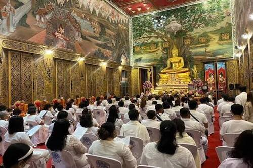

บทสวดมนต์ข้ามปี รับความรุ่งเรือง
การก้าวเข้าสู่ปีใหม่ด้วยสติ หลังจากผ่านเรื่องราวและปีที่หนักหน่วงมาสำหรับใครบางคน และเพื่อเป็นการต้อนรับสิ่งดีๆ หลายคนจึงเลือกทำสิ่งที่คิดว่าจะเป็นการเริ่มต้นวันใหม่ ศักราชใหม่ ได้อย่างดี เช่น การทำบุญ ตักบาตร นั่งสมาธิ หรือแม้แต่การสวดมนต์ข้ามปี ยังได้รับความนิยม เพราะเชื่อว่าการสวดมนต์ทำให้เรามีสมาธิจดจ่อ และยังเป็นการนำทางให้เราเริ่มต้นปีใหม่ด้วยสิ่งดีๆได้เช่นกันนั่นเอง
สำหรับหลายคนที่อยู่ที่บ้านไม่แม้กระทั่งจะออกไปสวดมนต์ที่วัด เราก็สามารถสวดมนต์ข้ามปีที่บ้านได้ด้วยตัวเราเอง โดย horoscope ไทยรัฐออนไลน์ ได้รวบรวมบทกล่าวบูชาพระรัตนตรัย บทคำกล่าวบูชาพระรัตนตรัย บทนมัสการพระพุทธเจ้า สมาทานศีล บทสรรเสริญคุณพระรัตนตรัย บทพระพุทธคุณ บทพระธรรมคุณ บทพระสังฆคุณ บทมงคลสูตร บทโพชฌังคปริตร บทพุทธชัยมงคลคาถา บทแผ่เมตตา แผ่เมตตาให้ตัวเอง บทแผ่เมตตาทั่วไป บทกรวดน้ำอุทิศส่วนกุศล คำอธิษฐานตอนกรวดน้ำ ให้แล้วจบครบทุกบท ที่จะรับบุญไปเต็มๆ
ความเชื่อสวดมนต์ข้ามปี การสวดมนต์ข้ามปี ถือเป็นการเสริมสิริมงคลให้กับตนเองเมื่อเข้าสู่ปีใหม่ๆ เป็นกุศโลบายทำสิ่งดี แล้วจะพบเจอสิ่งดีๆ ชีวิตราบรื่น มีความสุข ไปตลอดทั้งปีนั่นเอง และนอกจากนี้ บทสวดมนต์นี้ ยังรวบเป็น บทสวดมนต์ก่อนนอน หรือตลอดปีก็สามารถทำได้เช่นกัน เพราะได้รวบรวมบทกล่าวที่สำคัญๆ โดยเริ่มสวดตั้งแต่บทที่ 1 บูชาพระรัตนตรัยดังนี้

๑. คำกล่าวบูชาพระรัตนตรัย อิมินา สักกาเรนะ พุทธัง อะภิปูชะยามิ อิมินา สักกาเรนะ ธัมมัง อะภิปูชะยามิ อิมินา สักกาเรนะ สังฆัง อะภิปูชะยามิ
๒. บทกราบพระรัตนตรัย อะระหัง สัมมาสัมพุทโธ ภะคะวา พุทธัง ภะคะวันตัง อะภิวาเทมิ (กราบ) สวากขาโต ภะคะวะตา ธัมโม ธัมมัง นะมัสสามิ (กราบ) สุปะฏิปันโน ภะคะวะโต สาวะกะสังโฆ สังฆัง นะมามิ (กราบ)
๓. นมัสการพระพุทธเจ้า นะโม ตัสสะ ภะคะวะโต อะระหะโต สัมมา สัมพุทธัสสะ (3 จบ)
๔. สมาทานศีล ๕ ปาณาติปาตา เวระมะณี สิกขาปะทัง สะมาทิยามิ อะทินนาทานา เวระมะณี สิกขาปะทัง สะมาทิยามิ กาเมสุมิจฉาจารา เวระมะณี สิกขาปะทัง สะมาทิยามิ มุสาวาทา เวระมะณี สิกขาปะทัง สะมาทิยามิ สุราเมระยะมัชชะปะมาทัฏฐานา เวระมะณี สิกขาปะทัง สะมาทิยามิ
๕. บทสรรเสริญคุณพระรัตนตรัย (ให้อานิสงส์ในทุกๆ เรื่อง) บทพระพุทธคุณ อิติปิโส ภะคะวา อะระหัง สัมมาสัมพุทโธ วิชา จะระณะ สัมปันโน สุคะโต โลกะวิทู อนุตตะโร ปุริสะธัมมะสาระถิ สัตถา เทวมนุสสานัง พุทโธภะคะวาติ บทพระธรรมคุณ สวากขาโต ภะคะวะตาธัมโม สันทิฏฐิโก อะกาลิโก เอหิปัสสิโก โอปะนะยิโก ปัจจัตตังเวทิตัพโพ วิญญูหิติ บทพระสังฆคุณ สุปะฏิปันโน ภะคะวะโต สาวะกะสังโฆ อุชุปะฏิปันโน ภะคะวะโต สาวะกะสังโฆ ญายะปะฏิปันโน ภะคะวะโต สาวะกะสังโฆ สามีจิปะฏิปันโน ภะคะวะโต สาวะกะสังโฆ ยะทิทังจัตตาริ ปุริสะยุคานิ อัฏฐะปุริสะปุคคะลา เอสะ ภะคะวะโต สาวะกะสังโฆ อาหุเนยโย ปาหุเนยโย ทักขิเนยโย อัญชะลีกะระณีโย อะนุตตะรัง ปุญญักเขตตัง โลกัสสาติ
๖. บทมงคลสูตร (ป้องกันอันตราย เพิ่มสิริมงคลรับปีใหม่) อะเสวะนา จะ พาลานัง ปัณฑิตานัญจะ เสวะนา ปูชา จะ ปูชะนียานัง เอตัมมังคะละมุตตะมัง ฯ ปะฏิรูปะเทสะวาโส จะ ปุพเพ จะ กะตะปุญญะตา อัตตะสัมมาปะณิธิ จะ เอตัมมังคะละมุตตะมัง ฯ พาหุสัจจัญจะ สิปปัญจะ วินะโย จะ สุสิกขิโต สุภาสิตา จะ ยา วาจา เอตัมมังคะละมุตตะมัง ฯ มาตาปิตุอุปัฏฐานัง ปุตตะทารัสสะ สังคะโห อะนากุลา จะ กัมมันตา เอตัมมังคะละมุตตะมัง ฯ ทานัญจะ ธัมมะจะริยา จะ ญาตะกานัญจะ สังคะโห อะนะวัชชานิ กัมมานิ เอตัมมังคะละมุตตะมัง ฯ อาระตี วิระตี ปาปา มัชชะปานา จะ สัญญะโม อัปปะมาโท จะ ธัมเมสุ เอตัมมังคะละมุตตะมัง ฯ คาระโว จะ นิวาโต จะ สันตุฏฐี จะ กะตัญญุตา กาเลนะ ธัมมัสสะวะนัง เอตัมมังคะละมุตตะมัง ฯ ขันตี จะ โสวะจัสสะตา สะมะณานัญจะ ทัสสะนัง กาเลนะ ธัมมะสากัจฉา เอตัมมังคะละมุตตะมัง ฯ ตะโป จะ พรัหมะจะริยัญจะ อะริยะสัจจานะ ทัสสะนัง นิพพานะสัจฉิกิริยา จะ เอตัมมังคะละมุตตะมัง ฯ ผุฏฐัสสะ โลกะธัมเมหิ จิตตัง ยัสสะ นะ กัมปะติ อะโสกัง วิระชัง เขมัง เอตัมมังคะละมุตตะมัง ฯ เอตาทิสานิ กัตวานะ สัพพัตถะมะปะราชิตา สัพพัตถะ โสตถิง คัจฉันติ ตันเตสัง มังคะละมุตตะมันติฯ
๗. บทโพชฌังคปริตร (หายจากโรคภัย สุขภาพดีรับปีใหม่) โพชฌังโค สะติสังขาโต ธัมมานัง วิจะโย ตะถา วิริยัมปีติปัสสัทธิ โพชฌังคา จะ ตะถาปะเร สะมาธุเปกขะโพชฌังคา สัตเต เต สัพพะทัสสินา มุนินา สัมมะทักขาตา ภาวิตกา พะหุลีกะตา สังวัตตันติ อะภิญญายะ นิพพานายะ จะ โพธิยา เอเตนะ สัจจะวัชเชนะ โสตถิ เต สัพพะทาฯ เอกัสะมิง สะมะเย นาโถ โมคคัลลานัญจะ กัสสะปัง คิลาเน ทุกขิเต ทิสะวา โพชฌังเค สัตตะ เทสะยิ เต จะ ตัง อะภินันทิตะวา โรคา มุจจิงสุ ตังขะเณ เอเตนะ สัจจะวัชเชนะ โสตถิ เต โหตุ สัพพะทาฯ เอะทา ธัมมะราชาปิ เคลัญเญนาภิปีฬิโต จุนทัตเถเรนะ ตัญเญนะ ภะนาเปตะวานะ สาทะรัง สัมโมทิตะวา จะ อาพาธา ตัมหา วุฏฐาสิ ฐานะโส เอเตนะ สัจจะวัชเชนะ โสตถิ เต โหนตุ สัพพะทาฯ ปะหีนา เต จะ อาพาธา ติณณันนัมปิ มะเหสินัง มัคคาหะตะกิเลสาวะ ปัตตานุปปัตติธัมมะตัง เอเตนะ สัจจะวัชเชนะ โสตถิ เต โหตุ สัพพะทาฯ
๘. บทพุทธชัยมงคลคาถา (ชนะอุปสรรคทั้งปวง พบความสำเร็จในปีใหม่) พาหุง สะหัสสะมะภินิมมิตะสาวุธันตัง ครีเมขะลัง อุทิตะโฆระสะเสนะมารัง ทานาทิธัมมะวิธินา ชิตะวา มุนินโท ตันเตชะสา ภะวะตุ เต ชะยะมังคะลานิฯ มาราติเรกะมะภิยุชฌิตะสัพพะรัตติง โฆรัมปะนาฬะวะกะมักขะมะถัทธะยักขัง ขันตีสุทันตะวิธินา ชิตะวา มุนินโท ตันเตชะสา ภะวะตุ เต ชะยะมังคะลานิฯ นาฬาคิริง คะชะวะรัง อะติมัตตะภูตัง ทาวัคคิจักกะมะสะนีวะ สุทารุณันตัง เมตตัมพุเสกะวิธินา ชิตะวา มุนินโท ตันเตชะสา ภะวะตุ เต ชะยะมังคะลานิฯ อุกขิตตะขัคคะมะติหัตถะสุทารุณันตัง ธาวันติโยชะนะปะถังคุลิมาละวันตัง อิทธีภิสังขะตะมะโน ชิตะวา มุนินโท ตันเตชะสา ภะวะตุ เต ชะยะมังคะลานิฯ กัตตะวานะ กัฏฐะมุทะรัง อิวะ คัพภินียา จิญจายะ ทุฏฐะวะจะนัง ชะนะกายะมัชเฌ สันเตนะ โสมะวิธินา ชิตะวา มุนินโท ตันเตชะสา ภะวะตุ เต ชะยะมังคะลานิฯ สัจจัง วิหายะ มะติสัจจะกะวาทะเกตุง วาทาภิโรปิตะมะนัง อะติอันธะภูตัง ปัญญาปะทีปะชะลิโต ชิตะวา มุนินโท ตันเตชะสา ภะวะตุ เต ชะยะมังคะลานิฯ นันโทปะนันทะภุชะคัง วิพุธัง มะหิทธิง ปุตเตนะ เถระภุชะเคนะ ทะมาปะยันโต อิทธูปะเทสะวิธินา ชิตะวา มุนินโท ตันเตชะสา ภะวะตุ เต ชะยะมังคะลานิฯ ทุคคาหะทิฏฐิภุชะเคนะ สุทัฏฐะหัตถัง พรัหมังวิสุทธิชุติมิทธิพะกาภิธานัง ญาณาคะเทนะ วิธินา ชิตะวา มุนินโท ตันเตชะสา ภะวะตุ เต ชะยะมังคะลานิฯ เอตาปิ พุทธะชะยะมังคะละอัฏฐะคาถา โย วาจะโน ทินะทิเน สะระเต มะตันที หิตวานะเนกะวิวิธานิ จุปัททะวานิ โมกขัง สุขัง อะธิคะเมยยะ นะโร สะปัญโญฯ
๙. บทแผ่เมตตาแผ่เมตตาให้ตัวเอง อะหัง สุขิโต โหมิ (ขอให้ข้าพเจ้ามีความสุข) อะหัง นิททุกโข โหมิ (ขอให้ข้าพเจ้าปราศจากความทุกข์) อะหัง อะเวโร โหมิ (ขอให้ข้าพเจ้าปราศจากเวร) อะหัง อัพยาปัชโฌ โหมิ (ขอให้ข้าพเจ้าปราศจากอุปสรรคอันตรายทั้งปวง) สุขี อัตตานัง ปะริหะรามิ (ขอให้ข้าพเจ้าจงมีความสุขกายสุขใจ รักษากายวาจาใจให้พันจากความทุกข์ภัยทั้งปวงเถิด)
บทแผ่เมตตาทั่วไป สัพเพ สัตตา สัตว์ทั้งหลายที่เป็นเพื่อนทุกข์ เกิดแก่เจ็บตายด้วยกันทั้งหมดทั้งสิ้น อะเวราโหนตุ จงเป็นสุขเป็นสุขเถิด อย่าได้มีเวรแก่กันและกันเลย อัพยาปัชฌาโหนตุ จงเป็นสุขเป็นสุขเถิด อย่าได้เบียดเบียนซึ่งกันและกันเลย อะนีฆาโหนตุ จงเป็นสุขเป็นสุขเถิด อย่าได้มีความทุกข์กายทุกข์ใจเลย สุขี อัตตานัง ปะริหะรันตุ จงมีแต่ความสุขกายสุขใจ รักษาตนให้พ้นจากทุกข์ภัยทั้งสิ้น เถิดฯ
บทกรวดน้ำอุทิศส่วนกุศล อิทัง เม มาตาปิตูนัง โหตุ สุขิตา โหนตุ มาตา ปิตะโร ขอส่วนบุญนี้จงสำเร็จ แก่มารดาบิดาของข้าพเจ้า ขอให้มารดาบิดาของข้าพเจ้า จงมีความสุข อิทัง เม ญาตีนัง โหตุ สุขิตา โหนตุ ญาตะโย ขอส่วนบุญนี้จงสำเร็จ แก่ญาติทั้งหลายของข้าพเจ้า ขอให้ญาติทั้งหลายของข้าพเจ้า จงมีความสุข อิทัง เม คุรูปัชฌายาจะริยานังโหตุ สุขิตา โหนตุ คุรูปัชฌายาจะริยา ขอส่วนบุญนี้จงสำเร็จ แก่ครูอุปัชฌาย์อาจารย์ของข้าพเจ้า ขอให้ครูอุปัชฌาย์อาจารย์ของข้าพเจ้า จงมีความสุข อิทัง สัพพะ เทวะตานัง โหตุ สุขิตา โหนตุ สัพเพ เทวา ขอส่วนบุญนี้จงสำเร็จแก่เทวดาทั้งหลายทั้งปวง ขอให้เทวดาทั้งหลายทั้งปวง จงมีความสุข อิทัง สัพพะ เปตานัง โหตุ สุขิตา โหนตุ สัพเพ เปตา ขอส่วนบุญนี้จงสำเร็จ แก่เปรตทั้งหลายทั้งปวง ขอให้เปรตทั้งหลายทั้งปวง จงมีความสุข อิทัง สัพพะ เวรีนัง โหตุ สุขิตา โหนตุ สัพเพ เวรี ขอส่วนบุญนี้จงสำเร็จ แก่เจ้ากรรมนายเวรทั้งหลายทั้งปวง ขอให้เจ้ากรรมนายเวรทั้งหลายทั้งปวง จงมีความสุข อิทัง สัพพะ สัตตานัง โหตุ สุขิตา โหนตุ สัพเพ สัตตา ขอส่วนบุญนี้จงสำเร็จ แก่สัตว์ทั้งหลายทั้งปวง ขอให้สัตว์ทั้งหลายทั้งปวง จงมีความสุข
คำอธิษฐานตอนกรวดน้ำ ถ้าข้าพเจ้าเคยสร้างเวรไว้กับผู้ใด สร้างกรรมไว้กับผู้ใดขอให้ท่านทั้งหลายจงมีส่วนร่วมในบุญกุศล และจงงดเว้นจากการจองเวรจองกรรมด้วยเทอญ สาธุ สาธุ สาธุ